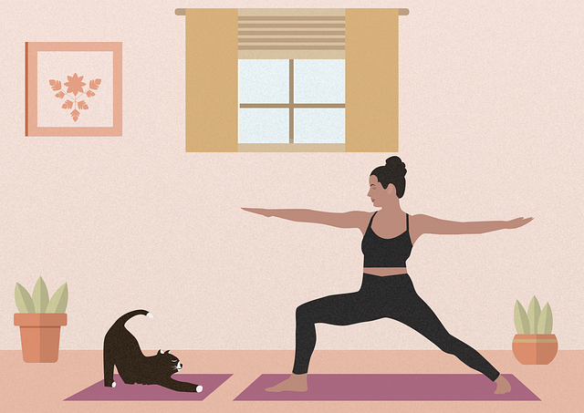

YOGA
듣고 싶은 강의를 선택하세요.
인요가
하타
빈야사
아쉬탕가
어떤 위대한 목표나 비범한 과업에 고무되면, 그대의 모든 사고는 경계가 허물어진다.
마음은 한계를 넘어서고, 의식은 사방으로 뻗어 나가며, 그대는 새롭고 거대하며 경이로운 세계 안에 있게 된다. 잠자고 있던 힘과 능력과 재능이 살아나며, 자기 자신이 지금까지 꿈꾸었던 것보다 훨씬 더 위대한 사람임을 발견하게 된다.
